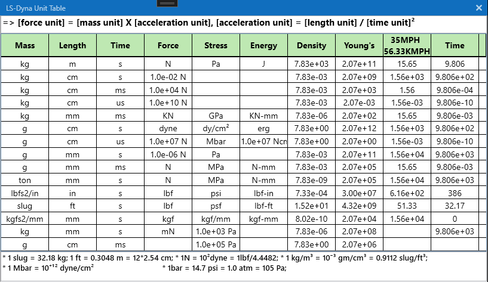

Appendix
1. LS-Dyna 단위계
LS-Dyna는 기본적으로 데이터의 단위계를 명시하지 않고, 입력되는 데이터의 값으로 계산되기 때문에 LS-Dyna에서 사용가능한 단위 셋(set)에 맞추어 값을 입력해야 합니다. 아래 사진에서 LS-Dyna에서 사용되는 단위계 셋(set)을 확인하세요. 아래 사진의 테이블은 LAMP에서 Help 메뉴의 Units 아이콘을 통해서 확인할 수 있습니다.

2. 전역 단위 변환
LAMP에서는 기본적으로 입력되는 데이터의 단위는 g.mm.N.MPa 단위이기 때문에 사용자가 실제 사용되는 단위계로 표시하거나 출력할 수 있도록 단위를 변환할 수 있습니다. 단위를 변환하기 위해서는 LAMP 프로그램 제일 하단 우측에 있는 ComboBox에서 변환하고자 하는 단위를 선택함으로써 변환할 수 있습니다. 현재 사용가능한 단위변환 목록은 아래 사진과 같습니다.

사용가능한 단위계 목록에서 변환하고자 하는 단위계를 선택하면 UI에 입력된 값들이 선택된 단위계로 변환됩니다. 선택된 단위계는 Application configuration 요소로써 다시 변경하지 않는 한 설정이 유지 됩니다.